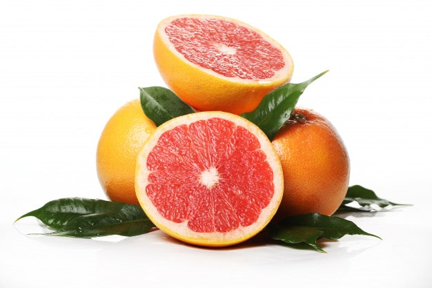

Research by scientists has revealed that some foods may have an impact on appetite. These could be beneficial for weight loss when incorporated into a healthful diet and lifestyle. Delicious nourishment's that help you diet? It sounds unrealistic. Weight loss falls down to straightforward math. You need to eat less calories than you consume. Read on to learn more about five foods that may be helpful for weight loss.
Good lifestyle . When combined with physical activity, your diet can help you reach and maintain a healthy weight and reduce your risk of chronic conditions such as diabetes or heart disease, and promote overall health and wellbeing. A balanced diet is one that gives your body the nutrients it needs to function correctly. To get the proper nutrition from your diet, you should consume the majority of your daily calories in: fresh fruits, fresh juices, fresh vegetables, eggs, rice, chicken, pulses, milk, bread, fish and meals rich in protein which undoubtedly helps in losing weight.
1. Soup Start a meal with a cup of soup, and you may end up eating less. It doesn’t matter if the soup is chunky or pureed, as long as it's broth-based. You want to keep the soup to 100 to 150 calories a serving. Since soups are mostly liquid, they're a great way to stay hydrated and full. They give your immune system a boost. Soups can assist you fighting off cold, flu and when your sick. Most soups are stacked with disease-fighting nutrients. 2. Oatmeal Beginning the day with a bowl of cereal could likewise bring about a lower number on the scales. An examination including 47 grown-ups took a gander at contrasts in hunger, completion, and next supper admission after members ate oats, instead of an oat-based prepared to-have breakfast grain. Subsequent to eating oats, members felt altogether more full and less ravenous than in the wake of eating the grain. Likewise, their calorie admission at lunch was lower subsequent to eating oats than in the wake of having breakfast oat. While the two morning meals contained similar measure of calories, the oats gave more protein, more fiber, and less sugar than the oat. The creators presumed that the distinction in fiber, explicitly a sort of solvent fiber called beta-glucan, was most likely answerable for the outcomes. 3. Pureed Vegetables You can add more veggies to your eating regimen, make the most of your "cheat" nourishments, and cut back on the calories you're eating, all simultaneously. At the point when Penn State scientists added pureed cauliflower and zucchini to macintosh and cheddar, individuals appeared to like the dish the same amount of. Be that as it may, they ate 200 to 350 less calories. Those sound vegetables added low-cal mass to the delicious dish. 4. Berries Fiber has been connected with weight the executives, and berries will in general be the absolute most noteworthy fiber natural products. One cup of raspberries or blackberries gives 8 g of fiber. Berries can be added to numerous foods, for example, oats, yogurt, or salad. Also, Google before you try new meals. It takes a minute just to check anything on Google. Before having a meal just search what it contains. Does it really have less fat and sugars, if yes? Bon Appetite. 5. Grapefruit One natural product that has the right to be featured is grapefruit. Its consequences for weight control have been concentrated legitimately. In a 12-week concentrate in 91 corpulent people, eating a large portion of a new grapefruit before dinners prompted weight reduction of 3.3 pounds (1.5 kg). The grapefruit bunch additionally had decreased insulin opposition, a metabolic irregularity that is ensnared in different ceaseless sicknesses. In this manner, eating a large portion of a grapefruit about 30 minutes before a portion of your day by day dinners may assist you with feeling more satisfied and eat less generally speaking calories. 
Source takepart.com
Conclusion It’s easy to find healthy foods to include on a weight loss diet. Load your shopping basket with bunches of lean protein, new veggies, natural products, fruits, fishes, salmon, nuts, lemon juices and oats. Along with moderation and regular exercise, eating these nutritious foods should lead to success and a fit and healthy life .